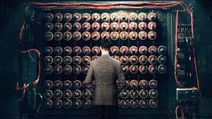
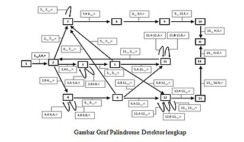

Mesin Turing adalah model komputasi teoretis yang ditemukan oleh Alan Turing
berfungsi sebagai model ideal untuk melakukan perhitungan matematis. Walaupun model ideal ini diperkenalkan sebelum komputer nyata dibangun, model ini tetap diterima kalangan ilmu komputer sebagai model komputer yang sesuai untuk menentukan apakah suatu fungsi dapat selesaikan oleh komputer atau tidak (menentukan computable function). Mesin Turing terkenal dengan ungkapan " Apapun yang bisa dilakukan oleh Mesin Turing pasti bisa dilakukan oleh komputer." Sebuah mesin turing terdiri atas barisan sel tersusun berupa pita yang dapat bergerak maju mundur, komponen aktif baca/tulis pita yang memiliki status perhitungan serta dapat mengubah/menulisi sel aktif yang ada di pita tadi, dan suatu kumpulan instruksi bagaimana komponen baca/tulis ini harus melakukan modifikasi terhadap sel aktif pada pita, serta bagaimana menggerakkan pita tersebut. Pada setiap langkah dalam komputasi, mesin ini akan dapat mengubah isi dari sel yang aktif, mengubah status dari komponen baca/tulis, dan mengubah posisi pita ke kiri atau ke kanan.
Sejarah
Jauh sebelum lahirnya program komputer, Alan Turing pada tahun 1936 telah mengeluarkan gagasannya berupa model mesin abstrak sebagai alat mekanik untuk mengerjakan prosedur yang efektif. Model ini disebut Mesin Turing. Mesin turing dapat diadaptasi untuk mensimulasi logika dari setiap algoritma oleh karena itu cara kerja mesin turing adalah ekivalen dengan cara kerja komputer sekarang ini dan mesin turing juga ekivalen dengan problema komputasi matematika. Mesin turing tidak ditujukan sebagai teknologi komputasi praktis tetapi lebih sebagai eksperimen pemikiran yang mewakili sebuah mesin komputasi. Mesin turing membantu para ilmuan komputer memahami batas-batas komputasi mekanis. Sebagai input dari mesin turing adalah kata atau untai atas suatu alfabet T. Mesin turing berhenti dengan keadaan menerima atau menolak untai. Kadang-kadang terjadi pula perulangan atau looping tak terhingga.

Keterangan:
- Tape: Tempat diletakannya inputan yang berupa kata/untai.
- Head: membaca dan menulisi sel pita mesin turing, bisa bergerak ke kiri atau ke kanan.
- Finite StateControl (FSC): otak dari TM, diimplementasikan dari algoritma pengenalan kalimat
Contoh Mesin Turing Sederhana
Sebuah contoh mesin Turing dapat dibangun untuk melakukan komputasi sederhana yang didefinsikan seperti
ini:
Tentukan ada berapa angka 1 dalam sebuah string berbentuk 0111...110 (rangkaian angka 1 yang didahului
dengan 0 dan
diakhiri juga dengan 0), apakah berjumlah genap atau berjumlah ganjil.
Jika angka 1 di antara dua angka 0 berjumlah genap, tulis sebuah angka 0 pada salah satu sel dari tape
mesin Turing.
Jika angka 1 di antara dua angka 0 berjumlah ganjil, tulis sebuah angka 1 pada salah satu sel dari tape
mesin Turing.
Untuk menyelesaikan masalah komputasi ini, kita buat tiga buah State bagi mesin Turing ini, yaitu Start,
Even, dan Odd.
Di samping itu kita buat sekumpulan aturan Transisi yang digunakan oleh
mesin Turing ini untuk melakukan proses komputasinya. Aturan-aturan Transisi tersebut dapat dituliskan
demikian:
- Jika mesin Turing berada pada status Start, dan membaca simbol 0 pada Tape, lakukan hal berikut: Pindah status menjadi status Even, Ganti simbol 0 pada Tape dengan Blank (atau Hapus simbol 0 pada Tape), dan Bergerak ke kanan satu sel.
- Jika mesin Turing berada pada status Even, dan membaca simbol 1 pada Tape, lakukan hal berikut: Pindah status menjadi status Odd, Ganti simbol 1 pada Tape dengan Blank, dan Bergerak ke kanan satu sel.
- Jika mesin Turing berada pada status Odd, dan membaca simbol 1 pada Tape, lakukan hal berikut: Pindah status menjadi Even, Ganti simbol 1 pada Tape dengan Blank, dan Bergerak ke kanan satu sel.
- Jika mesin Turing berada pada status Even, dan membaca simbol 0 pada Tape, lakukan hal berikut: Pindah status menjadi Halt, Ganti simbol 0 pada Tape dengan 0, dan tetap pada sel tersebut (tidak perlu berpindah ke kiri maupun ke kanan).
- Jika mesin Turing berada pada status Odd, dan membaca simbol 0 pada Tape, lakukan hal berikut: Pindah status menjadi Halt, Ganti simbol 0 pada Tape dengan 1, dan tetap pada sel tersebut.
Dibawah ini adalah graf dari palindrome detector, merupakan sebuah simulasi mesin turing yang berfungsi untuk mendeteksi kata palindrome yang diinputkan oleh user. Kata atau untai yang dibentuk masih terbatas pada penggunaan huruf “A” dan “B”. Contoh kata yang dibentuk adalah “ABAABBA” untuk kata yang tidak termasuk dalam palindrome, dan “BABBAB” untuk kata yang termasuk dalam palindrome.

{kind=link}